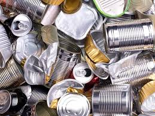

¿Como reciclar metal?

El metal reciclado supone un importante ahorro de recursos. Por ejemplo, el aluminio reciclado contamina un 95% menos que el virgen y una lata de refresco reciclada supone un ahorro equivalente a 3 horas con la televisión encendida.
Muchos materiales metálicos, además, tienen una gran ventaja: se pueden reciclar muchas veces. El aspecto menos positivo es que no se puede hacer en casa, ya que los procesos de tratamiento son complicados y deben llevarse a cabo en plantas especializadas.
Preguntas frecuentes del reciclado de metal
¿Donde lo tiro?
El contenedor donde desechar el metal depende de su forma y estado. Lo más común es querer reciclar envases de metal o elementos pequeños, como tapas de botes de cristal. En estos casos, siempre que el objeto esté limpio de químicos o restos de lo que contenían, deberán tirarse en el contenedor amarillo. En caso de tener residuos, deberán depositarse en un punto limpio, donde también deben depositarse otros objetos como sartenes, utensilios o herramientas.
La mayor parte de los metales pueden fundirse para crear nuevos metales. El aluminio, plomo, hierro, acero, cobre, plata y oro son reciclados fácilmente cuando no están mezclados con otros elementos. Se funden y cambian de forma o adaptan la misma que la anterior, reduciendo en gran medida los costes de producción y el impacto medioambiental.
¿Cual es el proceso?
Pero, ¿qué pasa con los metales después de tirarlos? El proceso de reciclado empieza cuando el usuario separa sus residuos. Luego, se recogen y clasifican los distintos metales, para procesarlos por separado.
Las latas de aluminio y acero se comprimen para llevarlas a la planta de reciclado correspondiente. Luego, se trituran y un imán separa el acero del aluminio. Cada uno de los metales, desde este momento, sigue un proceso diferente. El aluminio se funde y se convierte en lingotes que luego se transformarán en nuevas latas u objetos. El acero, por su parte, también será fundido y transformado en nuevos objetos como las latas de conservas, hechas en su mayoría de acero con una capa de estaño interior que evita la oxidación.
¿Qué metales son reciclables?
Los objetos de metal que pueden reciclarse incluyen latas de conservas o cerveza, tapas de tarros de cristal, botones, chapas, papel de aluminio, alfileres, alambres, sartenes o cacerolas, entre otras cosas. Los objetos cotidianos de metal que pueden reciclarse suelen tener una mezcla de distintos materiales u otros elementos, Por ello, el primer paso del tratamiento es separar esos compuestos, pero eso no significa que no sean reciclables. Los metales reciclables son:
Los metales que no pueden reciclarse son aquellos que están contaminados, como cubos de pintura o residuos tóxicos o latas de aerosoles. Estos residuos deben depositarse en un punto limpio.